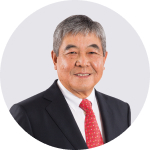

Mr. Kuok Khoon Ean
Chairman and Non-Executive Director
More Details

Mr. Seow Kang Hoe, Gerald
Chief Executive Officer and Executive Director
More Details
Dato’ Jude Philomen Benny
Lead Independent Director
More Details
Dato’ Ahmad Sufian @
Qurnain Bin Abdul Rashid
Independent Director
More Details
Ms. Yong Hsin Yue
Non-Executive, Alternate Director to Mr. Wu Long Peng
More Details